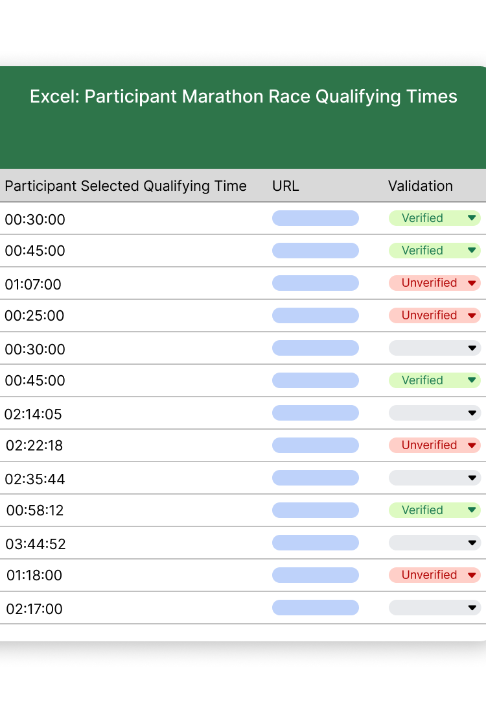
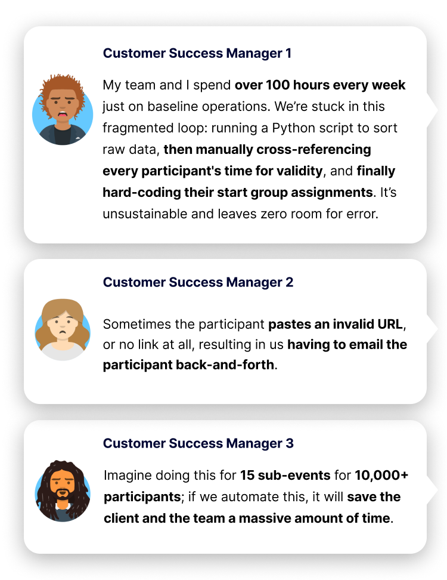

Automating Qualifying Time Verification: Optimizing Start Group Logistics for Large-Scale Marathons
High-Level Impact
Efficiency Boost: Reduced manual verification from 80+ hours to a streamlined automated process.
Operational Optimization: Decreased cross-functional friction from 5–6 points of contact down to 1–2.
Financial ROI: Protected a projected $2M in revenue by preventing churn among elite race organizers.
Internal Recognition: Voted the #1 "must-need" feature for customer retention by the Customer Success team.
The Problem: Manual Bottlenecks at Scale
Large-scale marathon organizers were losing over 80 hours manually verifying qualifying times in Excel to determine each runner's Start Group assignment. This manual bottleneck involved multiple stakeholders, risked critical data errors, and threatened the logistical integrity of elite events.


Customer Success Manager 1: My team and I spend over 100 hours every week just on baseline operations. We're stuck in this fragmented loop: running a Python script to sort raw data, then manually cross-referencing every participant's time for validity, and finally hard-coding their start group assignments. It's unsustainable and leaves zero room for error.
Customer Success Manager 2: Sometimes the participant pastes an invalid URL, or no link at all, resulting in us having to email the participant back-and-forth.
Customer Success Manager 3: Imagine doing this for 15 sub-events for 10,000+ participants; if we automate this, it will save the client and the team a massive amount of time.
My Strategic Role
As the Lead Product Designer, I spearheaded the requirement synthesis and high-fidelity design. My focus was advocating for UX improvements while navigating complex technical constraints like pre-existing Validation Lists.
The Process: From Confusion to Clarity
1. Requirement Synthesis & MVP Alignment
Collaborated with Customer Success to identify that sorting and manually validating Excel data was the primary user pain point. I championed an MVP that balanced manual and automatic flows to align stakeholders and decrease initial project scope.
2. Technical Problem Solving
I identified an opportunity to leverage a concurrent feature, Validation Lists, to expedite production. By negotiating between PMs to move validation to the Organization-level, we increased the feature's value across all events within a client's portfolio.
3. Eliminating Team Friction with Visual Logic
When technical shifts regarding configuration and permissions caused team confusion, I documented 4 distinct flow charts. These artifacts ensured Engineering and QA had a single source of truth for every expected behaviour scenario.
Strategic Outcomes & Lessons
- Design Velocity: Proven that speedy iterations require deep initial documentation of user problems.
- Future-Proofing: Successfully negotiated for a v2 roadmap to establish reusable front-end patterns, ensuring long-term scalability.
- Stakeholder Management: Used the MVP phase to successfully reduce scope while keeping the project on a strict 2-week timeline.